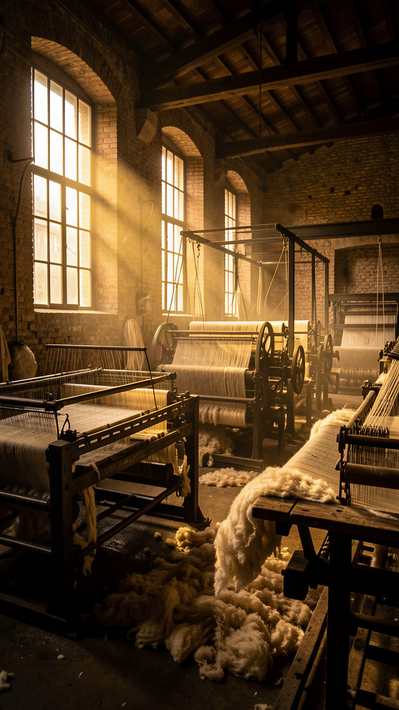

The definitive destination for fashion journalism, industry discussions and sustainable innovation.

How a district built on regenerated fibre is rewriting its own playbook — and what its terzisti network can teach the rest of the industry about resilience without losing craft.
"Is regenerated wool actually scaling, or just marketing?"
A supply chain lead on traceability gaps in terzisti networks
"How do you audit a subcontractor for fibre origin?"
Editorial highlights selected by our team — across luxury, manufacturing, retail and the conversations shaping the day.
Today's textile markets show moderate stability, with cotton recovering while energy costs remain elevated. These movements continue to influence sourcing strategies across Europe.
Energy and fibre costs remain the two variables every sourcing director in Prato is watching this quarter — together, they explain most of the margin pressure mills are reporting right now.
Forum della Moda — Market DeskInteractive panels combining KPIs, research, sustainability signals and AI signals in one scannable dashboard.
GOTS certified companies worldwide. Italy ranks #4 by count.
AI Fashion market size, +28.3% YoY growth projected through 2028.
Export growth in Q1 2026, driven by Middle East and Asia Pacific.
Analisi sistematica di sistemi di computer vision e deep learning per ispezione difetti su 12 impianti industriali.
Reported and written by Forum della Moda editors. Verified before publication, open for discussion after.
Organised for clarity, not chaos. Every thread is searchable, citable, and built to last.
Ask the people who actually run the production floor, the pattern table, and the supply chain.
Fashion weeks, trade shows and webinars — follow them and join the conversation before, during and after.